| Level | Topics | Terms per topic (mean) | Terms per topic (sd) |
|---|---|---|---|
Researchers in the disciplinary matrix
A geometric map of science based on topics and disciplines
1 Centre for Science, Technology, and Society Studies (CSTSS)
Institute of Philosophy, Czech Academy of Sciences
hladik@flu.cas.cz, @hlageek@sciences.social
2 Centre for Research on social InequalitieS (CRIS)
CNRS/Sciences-Po
yann.renisio@sciencespo.fr
Mapping science - with disciplines

Mapping science - with disciplines

Mapping science - with clusters


Mapping science - with people

Motivation
- How can we map epistemological orientations of scientists?
- Combine two traditions of science mapping:
- scientometrics (science is dynamic, i.e., clusters are more telling than disciplines; focus on publications)
- sociology of science (disciplines matter; focus on individuals)
- Topic modeling
- analysis of “disciplinary matrix” (Kuhn) of topics
- projection of individual topic portfolios
- Combine two traditions of science mapping:
Protocol
- data: 1039577 records (articles, books, book chapters, proceedings) from the Czech R&D Information System
- topic model of scientific abstracts
- document topic portfolios (distribution of topics per document)
- individual topic portfolios (average over documents that define an individual’s scientific contribution)
- disciplinary topic portfolios (average over documents that define a discipline)
- document topic portfolios (distribution of topics per document)
- mapping the “disciplinary matrix”
- compositional data transformation
- methods of geometric analysis (PCA)
- projection of individual topic portfolios onto knowledge space defined by disciplinary matrix
- relating epistemological and social variables
TopSBM topic model of the Czech database of research outputs
- Corpus:
- Documents: 838428
- Terms: 116703
Clustering of FORD disciplines by topics
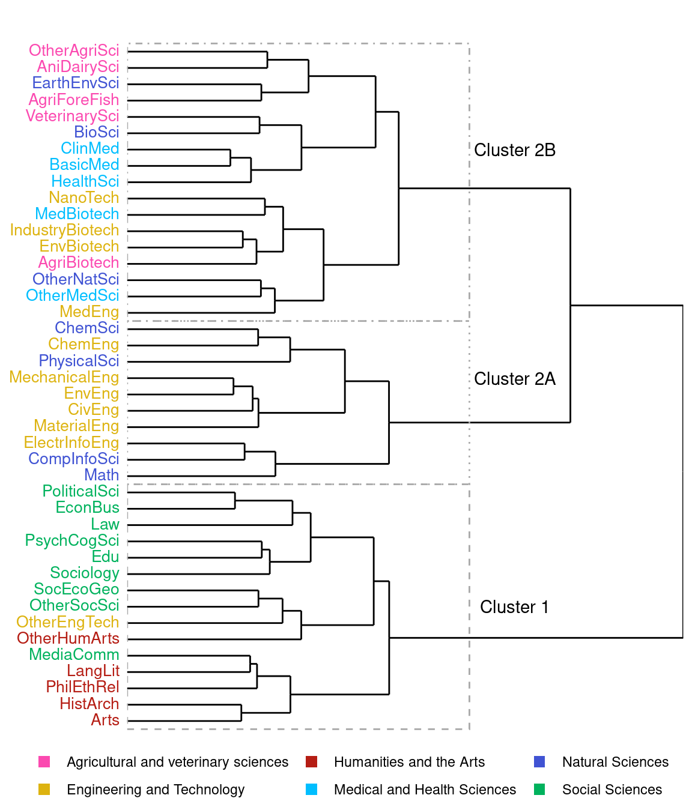Principal components 1 & 2 - topics
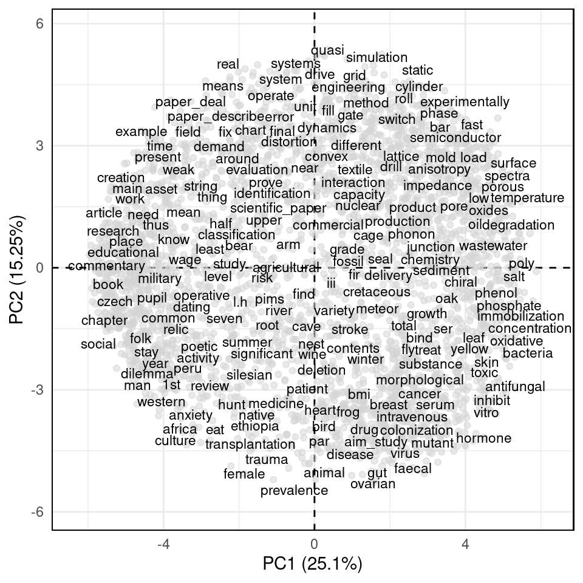Principal components 1 & 2 - disciplines
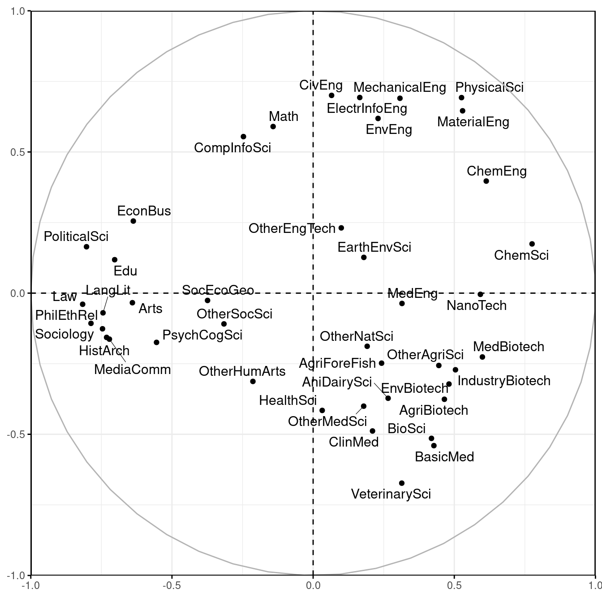Interpretation of topic polarity - axis 1
Negative pole |
Positive pole |
|
|---|---|---|
| try look refer just broader circumstance | aqueous_solution ionic nacl hydrogen_peroxide dilute hcl | |
| topic bring perspectife can_see starting_point popularity | cell cells cell_culture immunofluorescence sensitize cytometry | |
| context chapter_focus entitle viewed deepen methodologically | acid acetic_acid acids citric butyric tartaric | |
| political politics democracy democratic civic president | diameter diametr lcft | |
| institution informal insider guarantor brochure proprietor | concentrations citrate diffusive turbidity c12 bioaerosol | |
| academic field_study seminar university_olomouc doctoral palacky | cellulose chitosan water_soluble encapsulation encapsulate insoluble | |
| interpret opinion answer every_day undergone affiliation | dsc styrene differential_scanning scanning_calorimetry vinyl propylene | |
| reader theme inspiration author_describe historical_context work_czech | bacteria bacterial agar bacterium prokaryotic proteobacteria | |
| perspective deal_issue ban reasons particularity mankind | temperature temperatur increase_temperature temperature_degree homogenisation nucleate | |
| reflect methodological increasingly gradual study_also key_factor | strain strains homemade straind astrain difussion | |
Interpretation |
Culture | Nature |
Interpretation of topic polarity - axis 2
Negative pole |
Positive pole |
|
|---|---|---|
| prevalence | quasi circular shaped shells dimensionally aproximation | |
| adipose_tissue insulin_resistance leptin visceral adiponectin adipocyte | numerical numerical_method numerical_result kirchhoff tearing bem | |
| ovarian hormonal testosterone progesterone contraception postmenopausal | solution solve_problem considered vmo solutio solutin | |
| sperm motility spermatozoa seminal infertility seman | models obtain_use modell model_describe extrapolation modelled | |
| sex vertebrate dimorphic dorso vertebrates hominid | dynamic describing dynamická thedynamic | |
| gastric cyst gastrectomy villous fpc nen | simulation simulation_model computer_simulation use_simulation simulace solidworks | |
| mammal rodent apodemus rodentia glareolus flavicollis | operating prototype labview spool rockwell shc | |
| elisa sera gondii toxoplasma serological toxoplasmosis | model model_use model_base simplified use_model model_can | |
| germ ovary testicular testes testis pharyngeal | systems system_use system_paper subsystem base_approach paperpresent | |
| female pubertal bouts ella tong rodrigues | real describe_method analysis_paper use_real dial inattention | |
Interpretation |
Life | Non-life |
Principal components 2 & 3 - topics
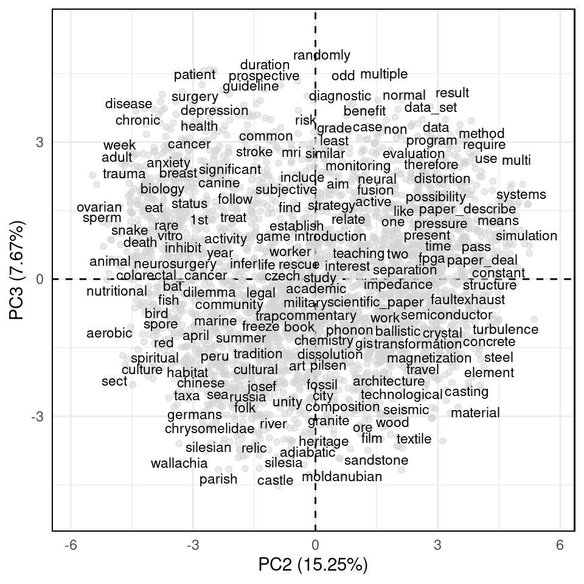Principal components 2 & 3 - disciplines
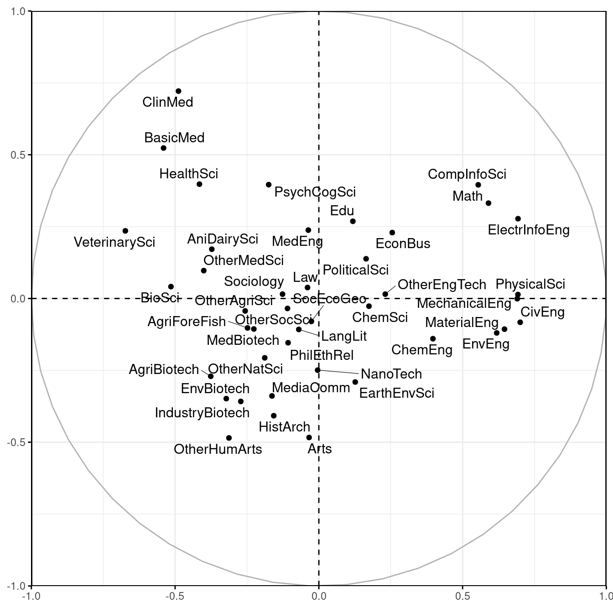Interpretation of topic polarity - axis 3
Negative pole |
Positive pole |
|
|---|---|---|
| pottery neolithic ware eneolithic beaker funnel | randomly consecutive compromise uncontrolled assigne slowe | |
| castle prague_castle cheb chrudim slovakian stará | duration controls fewer unrelated sustained inconclusive | |
| parish chapel sacral romanesque dominican catherine | diagnosis diagnose pathological pathology differential_diagnosis time_interval | |
| moldanubian feldspar biotite muscovite amphibole calc | involved result_study statistical_analysis immediately underly profiling | |
| painting paint virgin canva badge photographical | disorder disorders neurodevelopmental neurodevelopment pharmacoeconomic dbt | |
| příbram microprobe apfu jáchymov supergene chalcopyrite | match | |
| garnet metamorphic granulite metamorphism monazite amphibolite | adjust specificity routine pace poole expired | |
| recycle demolition recycled lightening fra rubble | multiple termination hereafter clipping lop meto | |
| danube dolní ivory retouch brickyard hron | patient patients pediatric patient_treat enrol group_patient | |
| bohemian bílá brandýs lomnice lipník železný | risk_factor morbidity_mortality associate_increase control_study cause_death epidemiologic | |
Interpretation |
Materials | Methods |
6 principles of disciplinary classification of topics
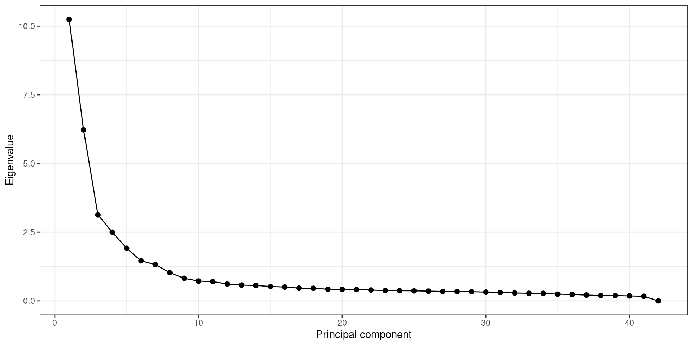
- Culture – Nature
- Life – Non-life
- Materials – Methods
- Synthesis – Analysis
- Applied – Fundamental
- Description/Observation – Prescription/Experiment
Projection of individual scientists - axes 1 & 2
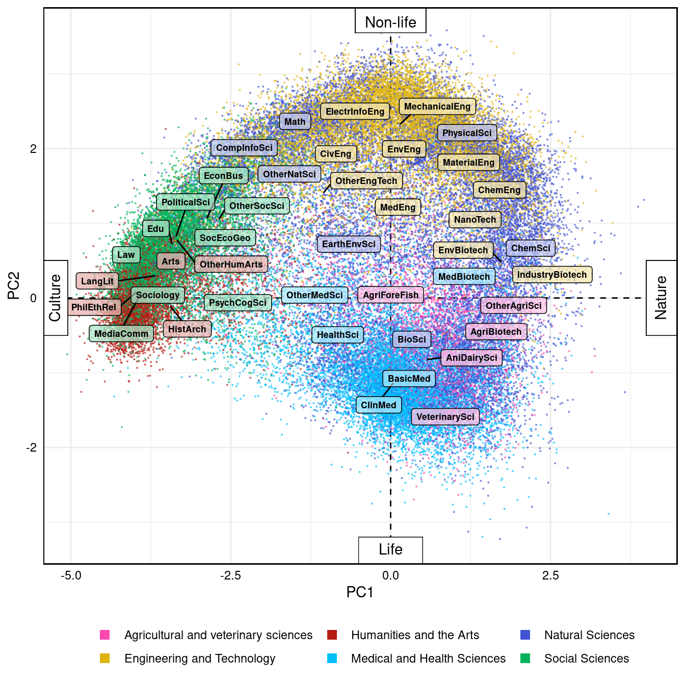Jean Piaget’s map of the sciences
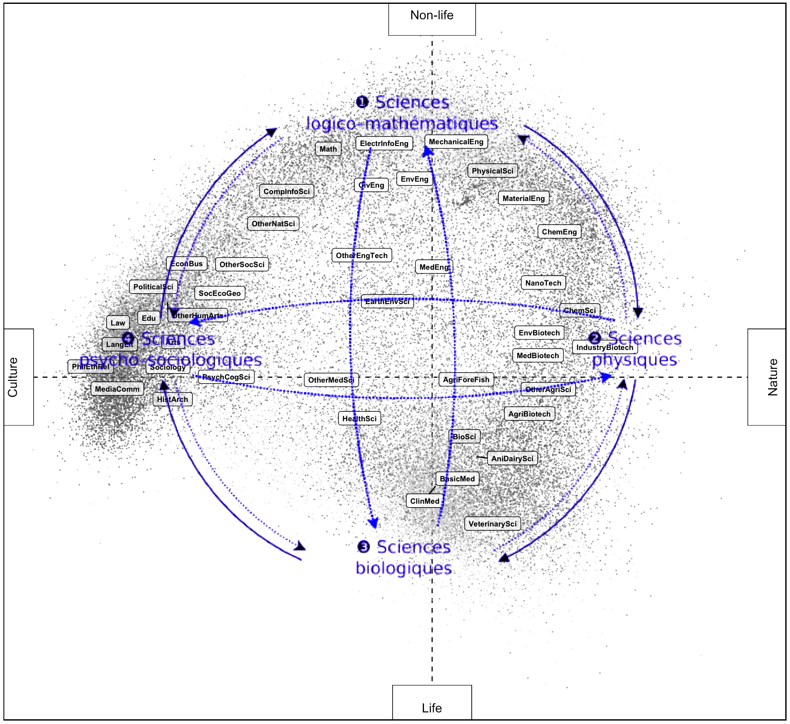
Source: Raphaël Sandoz, Interactive Historical Atlas of the Disciplines, University of Geneva
Consensus map of science

Source: Klavans, Richard, and Kevin W. Boyack. 2009. “Toward a Consensus Map of Science.” Journal of the American Society for Information Science and Technology 60 (3): 455–76. https://doi.org/10.1002/asi.20991.
Projection of individual scientists - axes 2 & 3
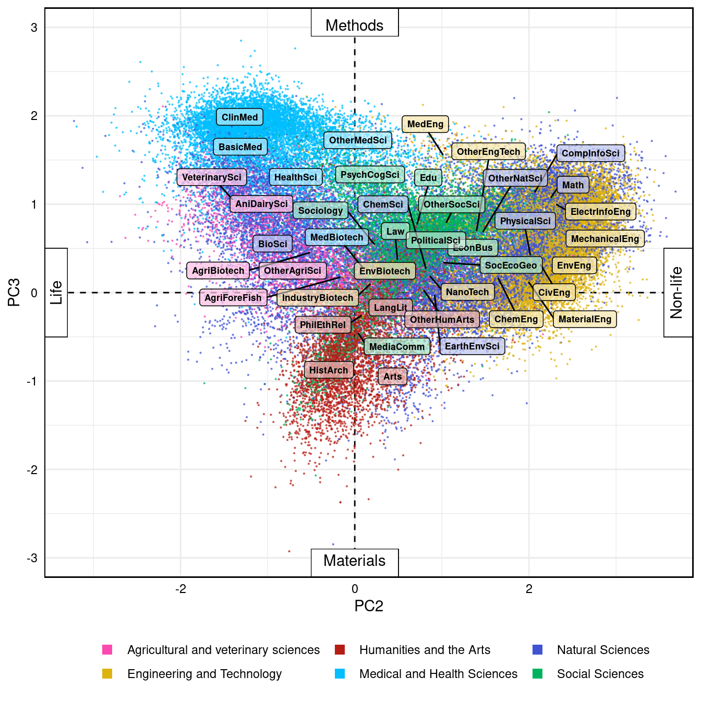Associations between epistemological and social positions
Publication attributes
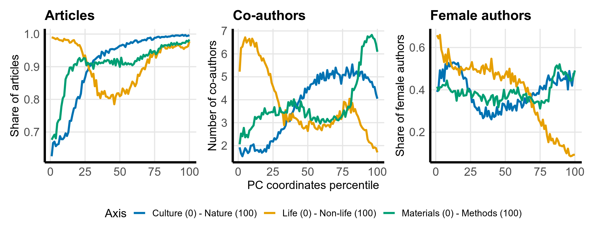Associations between epistemological and social positions
Affiliations
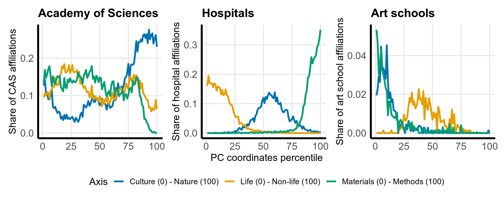Associations between epistemological and social positions
Principal investigators
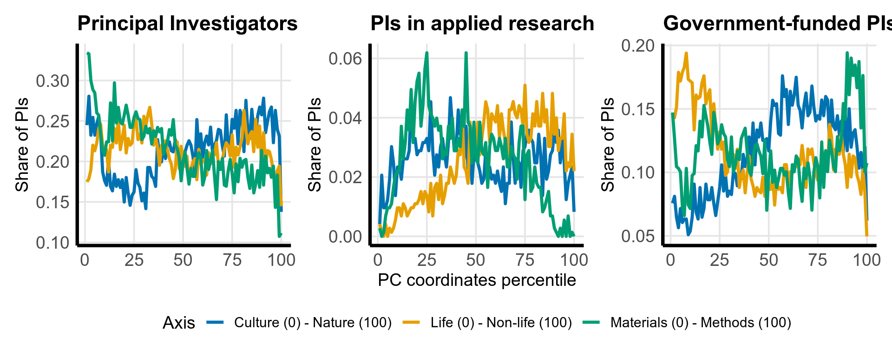Gender(ed) topic portfolios
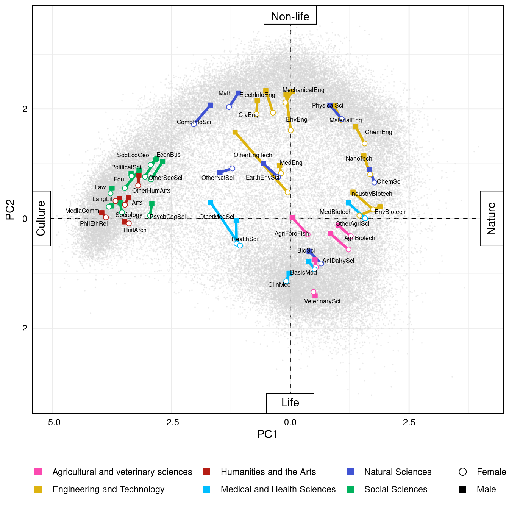Thank you!
- We mapped the landscape of scientific knowledge with algorithitmic linguistic topics and disciplinary metadata
- Variances of topic ratios across disciplines reveal multidimensional principles of knowledge classification
- Individual topic portfolios can be projected on continuous epistemological scales
Preprint on SocArXiv: https://osf.io/94jd5/

28th International Conference on Science, Technology and Innovation Indicators, Berlin, September 18-20, 2024